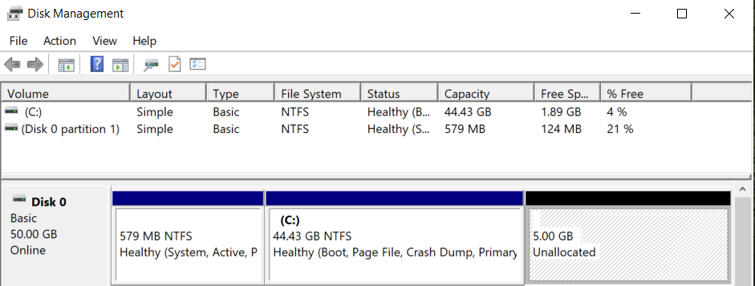

Two ways of using KVM-based vms on Linux are introduced. One is using virt-manager GUI, another is using the raw qemu-system.
I. Prerequisites
1 | pacman -S qemu bridge-utils iptables dnsmasq ebtables |
check for module loading:
1 | lsmod | grep kvm |
To auto load a module at boot, create a file like ‘/etc/modules-load.d/virtio.conf’
1 | # Load virtio at boot |
II. Virt Manager
1 | pacman -S virt-manager |
1 | sudo usermod --append --groups libvirt $(whoami) |
check for nat:
1 | sudo virsh net-list --all |
Then install using GUI.
if you want a raw image, create the img file by yourself
1 | qemu-img create -f raw imgfile 20G |
II.A Win7 VM installation and usage
aur install virtio-win
pacman install dmidecode
Under hard disk OS-images directory, find the file windows7_Ultimate_x64.iso and copy it into /var/lib/libvirt/images.
This is a ghost OS image with some preinstall software. I use this because the activation tool is inside.
Just put the script and Windows Loader.ext in the same directory and then run the script in Administrator.
Real time clock
In virt manager, enable XML editing.
Then replace <clock offset='utc'> with <clock offset='localtime'>
Administrator open cmd:
1 | bcdedit /set {default} USEPLATFORMCLOCK on |
Office 2016 pack
mount the iso file: Office_2016_x64_ZH_16.0.7466.2038.iso
off-line installer:
start one of the Office app
convert and activate
QXL Acceleration
1 | lsmod|grep qxl # check |
To auto load a module at boot, create a file like ‘/etc/modules-load.d/qxl.conf’
1 | # Load qxl at boot |
This is not enough. Because we just build a base on the server, but do nothing on the Windows guest. Look at this:
Next install spice-guest-tools-latest.exe downloaded from https://www.spice-space.org/download.html.

比较不好的一个bug是虚拟机内部的复制粘贴不好用了，所以对于跨机的复制粘贴，还是采用原始的文件方式来实现。
make sure sshd on host is on
open one term on host and type tty to get device name，say /dev/pts/0
ssh to host using PuTTY from win7 clientecho "copied text" >> /dev/pts/0
You will see “copied text” on the host terminal.
II.B Win10 VM Installation
Because of two bugs of Win7 VM: the first is that copy-and-pasteing for office object always throws an error in VM; the second is that Office2016 on win7 cannot open remote-location file. I change to win10 vm, and I found that’s cool.
II.B.a Launch VM as a desktop program
Go to Virt-manager > Connection Details to find Libvirt URI, here mine is qemu:///system

Then open virtual machine, go to View > Details to find the name of the virtual machine, here mine is win10
Now we can test the direct-open command:
1 | virt-manager --connect qemu:///system --show-domain-console win10 |
Then create your desktop file under ~/.local/share/applications:
1 | [Desktop Entry] |
II.B.b Expand block image size
To add 5G to my win10 raw format volume, first check the state:
1 | # virsh list --all |
Then go to increase
1 | # cd /var/lib/libvirt/images/ |
Then start win10 VM and right click ‘Start Menu’ -> Disk management -> Extend Volumn C:\

ok.
II.B.c PCI硬件设备直通
Prerequisite: Enable IOMMU(Input/Output Memory Management Unit)
Intel CPU上开启IOMMU需要VT-d的支持。VT-d(Intel Virtualization Technology for Direct I/O)是一个位于CPU、内存和I/O设备之间的硬件设备，它可以拦截I/O设备产生的中断请求和通过DMA方式对虚拟机内存的访问，然后重定向到通过虚拟机监视器（VMM）设定的虚拟机中。VT-d技术支持了虚拟机内部驱动程序直接与硬件设备通信，替代了传统的软件模拟方式，大大提升了虚拟化的I/O性能。
开启方式可分为临时开启和写配置文件开启两种方式：
方式一（临时开启方法）：在计算机启动的grub页面按e进入kernal模式，在启动vmlinuz的参数后面添加 intel_iommu=on 和 iommu=pt
这种开启方法在重启之后配置又会变成原来的样子。
方式二（写配置文件开启方法）：
1 | su |
在 GRUB_CMDLINE_LINUX_DEFAULT 参数中添加 intel_iommu=on iommu=pt
GRUB_CMDLINE_LINUX_DEFAULT=”loglevel=3 intel_iommu=on iommu=pt”
1 | grub-mkconfig -o /boot/grub/grub.cfg |
1. 配置无线网卡直通
默认的虚拟机使用NAT模式上网，对一些其他上网模式也是支持的。目前我对于桥接模式的配置没有成功，所以这里记录只成功了的网卡直通模式。
在该模式下，虚拟机直接使用无线网卡联网，宿主机可以用有线连接，当时配置该模式只是为了暂时同步一下微信聊天记录（因为必须在同一wifi下）
成功开机后root使用下面命令检查无线网卡的pci地址：
1 | shopt -s nullglob |
我的是
IOMMU Group 15:
3a:00.0 Network controller [0280]: Qualcomm Atheros QCA6174 802.11ac Wireless Network Adapter [168c:003e] (rev 32)
再检查一下地址是否正确和是否支持iommu
1 | lspci -n -s 3a:00.0 |
显示是支持的：
[ 0.452590] pci 0000:3a:00.0: Adding to iommu group 15
将无线网卡与宿主机解绑：
1 | echo "0000:3a:00.0" > /sys/bus/pci/devices/0000\:3a\:00.0/driver/unbind |
然后，打开虚拟机软件，添加pci device，与虚拟机绑定:
参考：https://www.cnblogs.com/xia-dong/p/11542771.html
2. 配置USB直通
一般情况下，QEMU的USB软件重定向方式可以满足U盘等设备的使用需求，但是在一些需要特定驱动的方式下（比如无线投影、USB转VGA），需要开启USB直通功能。
1 | [root@arch wsd]# lsusb |
通过lsusb命令可以看到，USB接口和蓝牙、摄像头都挂在USB Bus 001下。
检查USB设置是否支持RESET功能：
1 | [root@arch wsd]# for iommu_group in $(find /sys/kernel/iommu_groups/ -maxdepth 1 -mindepth 1 -type d);do echo "IOMMU group $(basename "$iommu_group")"; for device in $(\ls -1 "$iommu_group"/devices/); do if [[ -e "$iommu_group"/devices/"$device"/reset ]]; then echo -n "[RESET]"; fi; echo -n $'\t';lspci -nns "$device"; done; done |
每行前面带有RESET字样就是可以支持的，可以看到”00:14.0 USB controller”是不支持RESET的。
II.B.d CPU绑定
通过 virsh vcpuinfo win10 可以查看当前使用的CPU情况
1 | wsd@xps13 ~ % sudo virsh vcpuinfo win10 [1] |
通过virsh edit win10，在<vcpu placement='static'>2</vcpu>下一行添加：
1 | <cputune> |
将虚拟机两个vCPU分别绑定在宿主机6和7号CPU上
再次检查CPU使用情况：
1 | [root@xps13 wsd]# virsh vcpuinfo win10 |
II.B.e 配置双屏
安装virt-viewer
1 | sudo pacman -Syu virt-viewer |
在Win10虚机配置页新增一个QXL Video，然后启动虚机。
通过remote-viewer登录：
1 | remote-viewer spice://localhost:5900 |
（可能还需要在Windows系统中Ctrl+P设置拓展屏）
References
https://wiki.archlinux.org/index.php/PCI_passthrough_via_OVMF
评论
shortnamefor Disqus. Please set it in_config.yml.